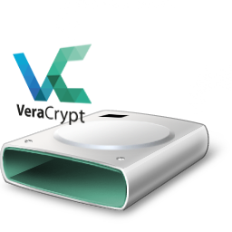

Veracrypt en Ubuntu y tu Raspberry por Terminal

Es muy probable que desees tener parte de tus datos cifrados para poder almacenarlo en una nube pública o simplemente quieras cifrar el contenido almacenado en tu Raspberry.
Quizás quieras cifrar un número de archivos que hay en un PC compartido con otras personas y este contenido lo tengas sincronizado con Syncthing hacia tu Raspberry.
En tu Raspberry, montarás el Volumen descifrado en otra carpeta, que estará sincronizada también con Syncthing a tu movil, pudiendo ver o editar los archivos en todo momento.
Hay varios métodos como hacerlo que os explicaré en siguientes artículos y Podcast, pero hoy voy a explicaros como hacerlo mediante Veracrypt, una derivación de Truecrypt, que supuestamente Veracrypt a solucionado los problemas encontrados en la auditoria de seguridad.
Veracrypt es una herramienta que permitirá crear un único archivo cifrado de un tamaño que determinaremos en el momento de la creación, y dentro de él estarán todos los archivos que deseemos guardar. Para poder editar, leer,… estos archivos, montaremos el archivo cifrado con Veracrypt en una carpeta vacía, como si se tratase de un usb o disco duro.
Es totalmente multiplataforma y podemos utilizar interfaz gráfica desde el escritorio.
En este Post os voy a explicar como hacerlo desde la terminal, pero si os resulta muy complicado crear el contenedor cifrado desde la terminal, hacerlo desde un PC y sincronizarlo con vuestra Raspberry.
Instalación en Ubuntu
En Ubuntu lo instalaríamos mediante PPA:
sudo add-apt-repository ppa:unit193/encryption sudo apt-get update sudo apt install veracrypt
Instalación en Raspberry
Instalamos las siguientes dependencias:
sudo apt-get update sudo apt-get install libfuse-dev makeself libwxbase3.0-0v5
Instalamos la última versión de Veracrypt que podemos encontrar en este enlace:
cd mkdir veracryptfiles cd veracryptfiles wget -L -O veracrypt-1.21-raspbian-setup.tar.bz2 https://launchpad.net/veracrypt/trunk/1.21/+download/veracrypt-1.21-raspbian-setup.tar.bz2
Extraemos el archivo descargados:
tar -vxjf ./veracrypt-1.21-raspbian-setup.tar.bz2 chmod +x veracrypt-1.21-setup-*
Instalamos ejecutando el script:
./veracrypt-1.21-setup-console-armv7
Ahora seguiremos los pasos que nos pedirá el programa:
1(instalar)Enter(aceptar la licencia)yes
Desinstalar
Para desinstalar:
rm -r veracryptfiles
Crear un Volumen
Primero crearemos una carpeta donde queremos montar el volumen. Por ejemplo:
mkdir -p /media/veracrypt
Vamos a crear nuestro volumen, para ello teclearemos este comando y Veracrypt nos hará una serie de preguntas que os explico a continuación. Recuerda, como te he comentado, que si te resulta complejo este paso, crealo desde tu PC y sincronízalo con tu Raspberry.
veracrypt -t -c
Ahora veracrypt nos preguntará:
- Si queremos que el volumen sea oculto. En caso de no serlo, pulsa
1 - Introduce la ruta completa del archivo cifrado:
$HOME/archivo_cifrado - Ahora nos preguntará el tamaño del archivo:
(sizeK/size[M]/sizeG)por ejemplo 50M (50Mb) - Nos pedirá con que algoritmo queremos cifrar nuestro archivo, el mas popular es AES, si quieres complicar un poco mas la cosa, selecciona uno de los otros. Introduce el número deseado
- Selecciona el algoritmo de hash deseado
1 - Ahora seleccionaremos el sistema de archivos.
5 - Introduce la contraseña. Se recomienda mas de 20 caracteres
- PIM significa Multiplicador de Iteraciones Personales. Presiona
ENTER - Si desea utilizar el archivo de claves en lugar de la contraseña, aquí puede definir el archivo de claves. Yo no lo utilizaré, así que presiono
ENTER - Como en la versión de terminal, no podemos utilizar el ratón como en la versión gráfica, vamos a teclear 320 caracteres aleatorios para crear la base para tu clave de cifrado.
- Ahora paciencia, la Raspberry será un poco lenta si el volumen que deseamos crear es muy grande
Montar Volumen
Para montar un volumen ya creado, como la mayoría de cifrados en GNU/Linux, el comando sería:
veracrypt <carpeta_origen> <carpeta_montaje>
Ahora vamos a seguir el ejemplo práctico:
veracrypt $HOME/archivo_cifrado /media/veracrypt
Ahora te preguntará que ingreses el PIM, el archivo de claves y si has creado un volumen normal, no oculto. Ni no has ingresado nada de esto, pulsa a todo ENTER, ENTER, ENTER.
Ya tendrás el volumen montado en la ruta que has especificado. Si quieres que la próxima vez no te pregunte nada al montar:
veracrypt $HOME/archivo_cifrado /media/veracrypt --pim=0 --keyfiles= --protect-hidden=no
Desmontar la unidad
Para desmontar todas las unidades montadas con veracrypt:
veracrypt -d
veracrypt -d <carpeta_origen>
Alias puede ser una Buena Idea
Alias puede ser una buena idea si no queremos recordar la ruta de las carpetas:
Enviar mediante printf a .bashrc nuestro comando con las carpetas que vamos a utilizar y el alias, en mi caso, veracrypt_m.
printf "\nalias veracrypt_m=\"veracrypt $HOME/veracrypt /media/veracrypt --pim=0 --keyfiles= --protect-hidden=no\"" >> .bashrc
Para desmontar, utilizaremos el alias veracrypt_d.
printf "\nalias veracrypt_d=\"veracrypt -d $HOME/veracrypt"" >> .bashrc
Conclusión
El punto positivo de Veracrypt, es que al ser un único archivo no hay graves problemas de sincronización, el punto negativo, es que si el archivo es muy grande, no es muy aconsejable hacer sincronizaciones cifradas con nuestro movil, ya que podriamos consumir nuestra tarifa de datos.
Fuentes
- https://www.veracrypt.fr/en/Downloads.html
- https://www.veracrypt.fr/en/Command Line Usage.html
- https://jacekstyrylski.github.io/2017/04/02/Vera-Crypt-OSMC/
Publicado por Angel el viernes 29 marzo del 2019
También te puede interesar:
Powered by org-bash-blog
Writing in orgmode whith emacs

Este obra está bajo una licencia de Creative Commons Reconocimiento-NoComercial-CompartirIgual 4.0 Internacional.